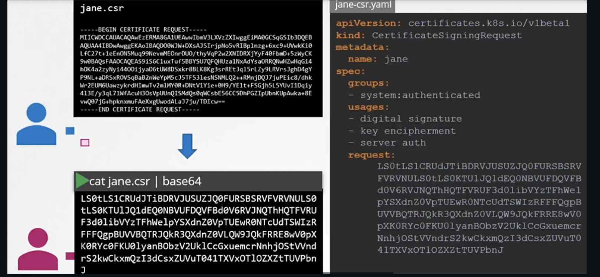

TLS Certificates
Generar Certificados
- Hay varas tools, easyrsa, openssl or cfssl.
Certificate Authority (CA)
- Generar Keys
- Generar CSR
- Firmar certificado
Generar Certificados de Cliente
Admin User Certificado
- Generar Keys
- Generar CSR
-
Firmar certificado
-
Certificado con permisos de admin
Seguimos el mismo procedimiento para generar los certificados de cliente para los demás components que acceden al kube-apiserver

Generar certificados de server
ETCD Certificado del server

Kube-apiserver Certificado


Kubectl Nodes (Server Cert)

Ver Certificados
Para ver detalles de un cert

Y para checar los logs puede ser de las siguientes maneras:
- Logs de un servicio
- Logs de un pod
O si no puedes ver con kubectl puedes hacerlo con docker (o crictl)
Certificate API
Este certificado se puede extraer y pasar al user
- El usuario crea su key
- Genera un CSR
- Envia la request y el admin toma esa key y crea un objeto de tipo CSR CertificateSigningRequest y el .csr del usuario
-w 0 sirve para quitar los saltos de linea del base64

- Para ver los csr
- Aprobar la request
- Ver un certificado
- Para decodificarlo
Todos las operaciones de certificados las hace el contoller manager
- Si alguien tiene que firmar los certificados, deben tener los CA, root y private key del CA server. El controller manager ya tiene estas opciones